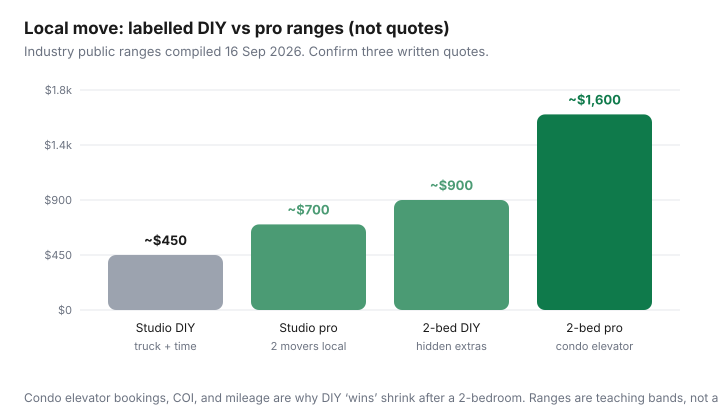

Housing · Canada
DIY vs hiring movers in Canada: a break-even worksheet that includes hidden costs
The $29.95 truck ad is not the move. Insurance waivers, kilometres, a second trip because the elevator window was two hours, pizza, and a pulled back are the move. Canadian condos add a bureaucracy layer U.S. driveway-to-driveway advice ignores: service-elevator bookings, certificates of insurance (COI), and hallway damage deposits.
This worksheet compares DIY, full-service, and a hybrid (you pack, they lift) with labelled ranges from public Canadian moving explainers reviewed 16 Sep 2026 — not a bid from any company, and not a promise your Saturday will cost $700. Get three written quotes. If a number below is treated as a quote, you misread it.
Disclosure: Moving-quote marketplaces and truck-rental deals are offer types. Saving Optimizer may earn a commission if we later add those links. We do not currently claim U-Haul, PODS, or mover partnerships. A phone and three local quotes are enough to use this page.
Key takeaways
- DIY line items people skip: collision waiver, extra kilometres, equipment, fuel, food, time off work, and liability if you scratch the corridor.
- Local professional ranges in public 2026 roundups often sit roughly $450–$900+ for a small load and $1,300–$2,800 for a local three-bedroom in busy markets — spreads of 30–40% between quotes are normal. Confirm HST.
- Most Toronto and Vancouver condos want the elevator booked days to weeks ahead and a COI naming the corporation. Reputable movers issue COIs; DIY truck rentals often do not, which can block the elevator.
- Long-distance DIY can look cheaper until fuel, hotels, and one-way fleet fees show up. Hybrid (container or pack-yourself) is the usual middle.
- Compare quotes on hours, stairs, long-carry, packing, and what happens if the elevator runs late — not on the first number in the email.
Line items DIY movers forget: truck insurance, mileage, equipment, food, time
| Line | Why it shows up | What to do |
|---|---|---|
| Base truck | The advertised $19.95–$80 day rate is the hook | Get the out-the-door with taxes |
| Per-km | Local trucks often charge $0.69–$1.29/km in public 2026 guides | Map the round trip including the return to the lot |
| Damage waiver | $15–$40/day is common on explainers; cargo is another product | Read what your tenant/home policy actually covers in transit |
| Dolly, blankets, straps | The truck is empty of padding | Borrow or add the kit to the quote |
| Helpers’ time | Friends are not free if you owe a weekend and beer forever | Put a dollar on 12 hours × people, even if you pay in pizza |
| Your time | A 15–20 hour DIY condo move is a real public estimate | Would you take unpaid leave for that? |
If tenant insurance is silent on goods in transit — many cheap policies are — DIY just transferred a sofa-shaped risk onto you. That is not an argument to buy a rider blindly; it is a line on the worksheet.
Professional quote ranges for studio to 3-bedroom local moves
Public Canadian roundups in 2026 describe local crews (2–3 movers plus truck) in Metro Vancouver around $120–$180/hour for two movers and higher for three, plus travel time from the depot. GTA three-bedroom local jobs are often quoted in bands like $1,300–$2,800 with downtown condos at a premium. A Toronto-to-Ottawa three-bedroom band in one public explainer sat roughly $1,800–$3,500. Treat every figure as a band to test with quotes.

Studios with ground-floor access are where DIY still wins on cash if you have a helper and a working back. Two-bedrooms in elevators are where the gap closes. Three-bedrooms plus a piano is not a truck-rental problem.
Condo elevator bookings, certificates of insurance, and damage deposits
This is the Canadian-specific failure mode.
- Call property management 2–4 weeks out (some Vancouver strata want 3–4 weeks). Ask: elevator window length, weekday-only rules, padding requirements, loading-dock hours.
- Ask whether a COI is required, the liability amount (often $2 million in condo instructions), and exactly whose name goes on the certificate.
- If you hire movers, send them the COI instructions immediately. Reputable firms issue them in a business day; amateurs discover this at 7 a.m. on Saturday when the concierge says no.
- If you DIY, ask whether a personal tenant policy COI will be accepted. Often it will not. That single “no” can force you to hire movers the same week at a panic rate.
- Budget the elevator damage deposit (cheque held, then returned). It is not a moving-company fee; it is still cash you must float.
Missed window: a two-hour elevator slot that you overrun becomes a second booking, overtime on a pro crew, or a truck sitting at $1/km in a loading zone. Put a buffer in the quote comparison, not in your optimism.
Long-distance vs local math
Local moves are hours × crew, plus stairs. Long-distance is weight, kilometres, and whether the truck is coming back empty. Public 2026 notes on a Toronto–Vancouver 26-ft one-way rental put truck bands in the low thousands before ~1,000 litres of fuel and hotel nights — all-in DIY can land in a $4,500–$6,000-ish teaching range that overlaps container models (BigSteelBox / PODS-style) quoted in similar thousands. The DIY “win” is often the illusion that your labour is free and mountain highways are restful.
For a 400 km provincial hop, run both: one-way truck with two friends versus a flat mover quote. Include the day you will not work.
Break-even examples for Toronto, Vancouver, and mid-size cities
| Situation | Lean DIY | Lean pro or hybrid |
|---|---|---|
| Toronto studio, freight elevator booked, one helper | If COI is waived for a small load and you can finish in the window | If the building demands a mover COI you cannot produce |
| Vancouver 1-bed strata, 4-hour window | Rarely, unless you already own a van and packing is done | Usually — elevator + COI + hills |
| Mid-size city 2-bed house, driveway both ends | Often, if you count time honestly and have helpers | If you would miss two days of paid work |
| 3-bed plus appliances | Almost never once you price injuries and stair carries | Default, with a hybrid pack |
Hybrid approach: DIY packing + pro heavy lift
Packing is the slow, cheap-if-you-are-time-rich part. Lifting dressers around a stairwell is the expensive injury. A common Canadian hybrid: you supply packed boxes, they supply two movers and the truck for a four-hour window that matches the elevator booking. You still need their COI. You still need to finish packing the night before — movers standing around because you are wrapping mugs are how hourly quotes explode.
How to compare quotes apples-to-apples
- Same date, same origin, same destination, same list of “we carry the dresser.”
- Ask: hourly versus flat, travel time, long-carry fees, stairs, packing materials, storage, weekend premium, HST.
- Ask: COI turnaround, WSIB/workers’ coverage, what happens if the elevator is late.
- Ignore a quote that is 40% below the other two without a written scope. That is how deposits vanish.
- Month-end and the 1st cost more because leases cluster. If you can move on the 12th, ask for that number too.
If you are moving because a renewal failed, put this worksheet next to the renewal scripts before you give notice in anger.
Sources & date stamps
- Public 2026 Canadian moving-cost explainers (Metro Vancouver hourly bands; GTA local three-bedroom bands; condo COI/elevator practice) — reviewed 16 Sep 2026 as ranges, not bids.
- Truck-rental damage-waiver and per-km figures from public consumer guides — verify on the reservation screen the week you book.
- Building rules come from your property manager, not from this page.
Frequently asked questions
Is a cheap truck rental cheaper than movers in Canada?
Sometimes for a ground-floor studio with helpers. Once you add waivers, kilometres, time, and a condo elevator COI, a two-bedroom DIY ‘win’ often shrinks. Price both with the same date and inventory.
Why do condos ask for a certificate of insurance?
Corporations want proof that hallway and elevator damage is insured. Many require the mover to name the corporation. A DIY rental may not satisfy that, which can block the move.
How far ahead should I book a service elevator?
Often two to four weeks, longer in some Vancouver strata. Ask your manager. Missed windows are a second fee, not a lecture.
What is a hybrid move?
You pack; professionals lift and drive, timed to the elevator booking. You still need a COI from the crew. Finish packing before they start the clock.
How do I compare mover quotes fairly?
Same date, same list of items, written scope for stairs, travel time, overtime, and elevator delays. Throw out a 40% outlier without a scope.